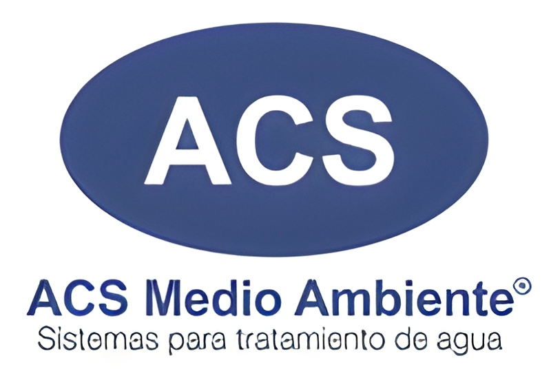
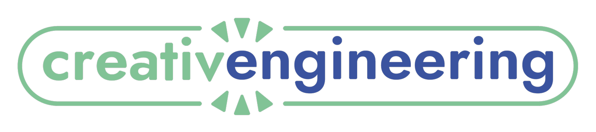
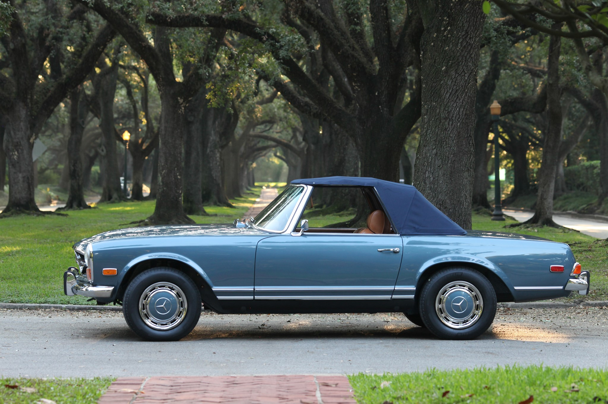

Designing engineering solutions for the jacket water heater team as well as for the generator team.
Working with suppliers to procure test parts and participating in analysis review of new designs.
Providing electrical support to the jacket water heater and generator teams.
December 2024 - January 2025

Assembled and installed electrical panels for water treatment plants in a food factory as a subcontractor of a Bimbo manufacturing plant.
Formerly Koch Separation Solutions
Modeled interface flow tubing between membrane housings and variable fluid valve mounting in SolidWorks
Pulled queries with SQL and VBA to report statistical data trends with Python in membrane filter manufacturing.
January 2022, May 2023-August 2023

Designed with Solidworks and manufactured parts for various clients using interdisciplinary techniques for specialized uses.
Set up and used a computer compliant to handle Controlled Unclassified Information in CAD for a US government project.
Maintained a 3D printer farm of different models, performing repairs when necessary.
April 2022, May 2022-August 2022

Worked full time under specialized automotive technicians at a Mercedes Benz restorer.
Practiced the trade standards for sandblasting, powder coating, zinc coating.
Worked with harness equipment to diagnose ECU errors that are displayed to the driver.
Familiarized myself with mounting and taking apart all components of combustion engines.
Inspiring kids' interests in coding by teaching game developing in Java, Lua, and C# in yearlong classes and summer camps.
Built and taught an intensive curriculum on 3D Printing and Additive Manufacturing
Promoted to Lead Coding Teacher at my center in June of 2020 after consistently leading Virtual Classes May-June 2020.